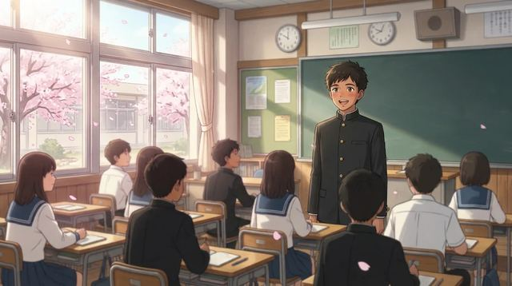

Opening soon · Pre-registration open
さくら日本語学院 · NarayanganjLearn Japanese.Study in Japan.
Japanese from your very first hiragana up to JLPT N3, and help at every step from applying to a Japanese language school to getting your visa.
- First 3 classes free
- All books included in the fee
- Morning and evening batches

The Japanese you’ll hear in your very first class.
Every sentence in our books and app can be heard in a natural Japanese voice. Tap to listen.


The road to Japan starts with good Japanese.
First 3 classes free
Try the classes first. Enrol only if you like them.
Books included in the fee
Every course book is included. Nothing extra to buy.
Our director lives in Japan
The director lives in Kobe, Japan, and knows study and daily life there first-hand.
Certificates schools can verify
We issue study-hour, attendance and transcript certificates. Each carries a QR code that schools in Japan can check online.
Choose your level.
2 hours of class every day: 10am to 12pm, or 6pm to 8pm.
Packages of more than one level cost less. Fees can be paid in instalments; contact us for details.
From admission to boarding the plane.
Getting to a Japanese language school takes six steps. We are with you at every one.
- 1Documents書類の準備Certificates, passport, sponsor papers
- 2Choosing a school学校選びA school that suits you
- 3Application出願Forms and translations
- 4Interview面接With practice beforehand
- 5COE and visa在留資格・ビザImmigration approval
- 6Off to Japan出発Getting ready to go
Japanese language schools usually admit students four times a year: January, April, July and October. Which intake you can join depends on your documents and your Japanese level. Ask us at the office or on WhatsApp.
What everyone asks.
Anything else? Ask us on WhatsApp.
When do classes start?
We are opening soon and will announce the first batch’s start date shortly. Pre-register and you will be the first to know.
Can I start from zero?
Yes. The N5 course starts with hiragana and katakana. You don’t need to know any Japanese.
Can I try a class before enrolling?
Yes, the first 3 classes are free. Enrol only if you like them.
Do I pay extra for books?
No. All course books are included in the fee.
Can I pay the fee in instalments?
Yes. Ask at the office or on WhatsApp how many instalments are possible.
When are the classes?
Two batches every day: 10am to 12pm, and 6pm to 8pm. Pick whichever suits you.
Can I practise at home?
Yes. Once enrolled, the student app gives you the books, daily words, kana and mock tests, all with Japanese voice.
When can I go to Japan?
Japanese language schools usually admit students in January, April, July and October. Which intake you can join depends on your documents and Japanese level.
Pre-registration sent.
We will contact you with the start date. For a faster answer, message us on WhatsApp now.
Message on WhatsApp